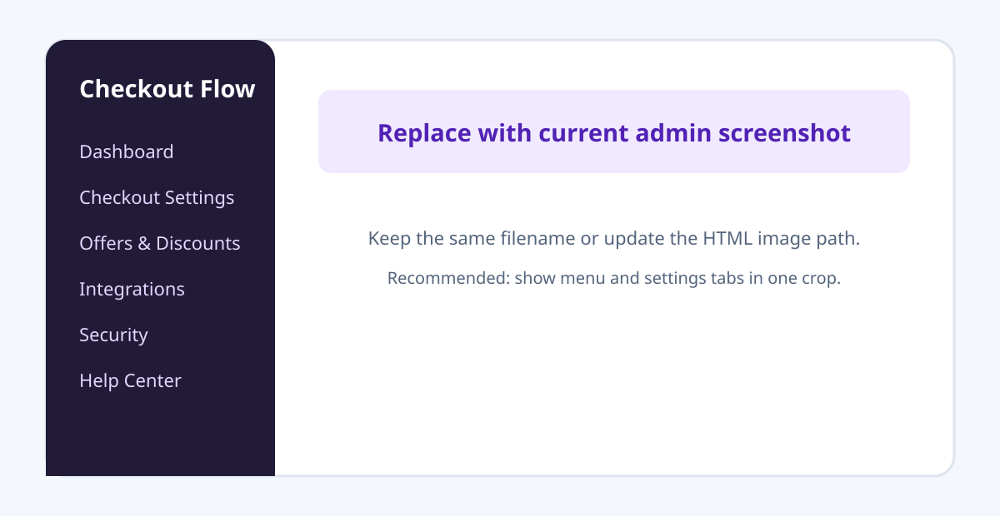
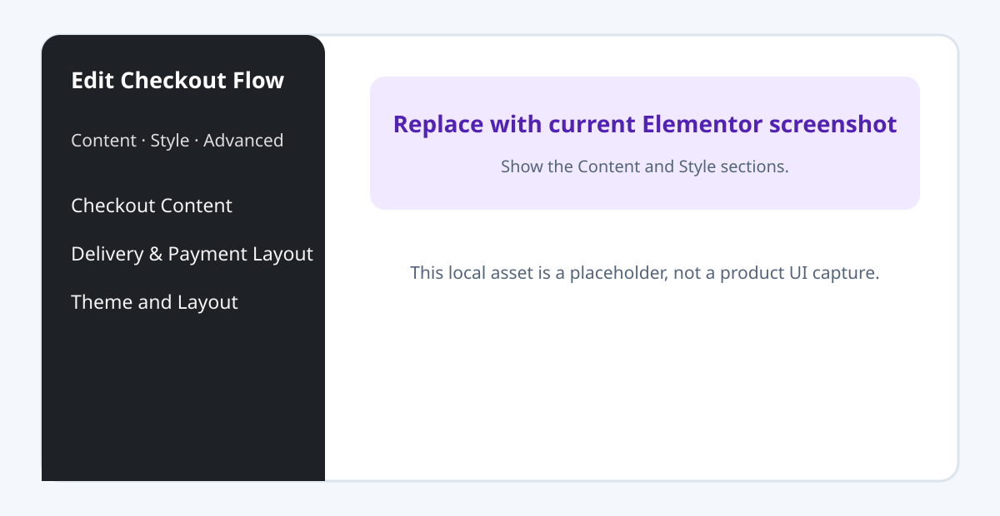
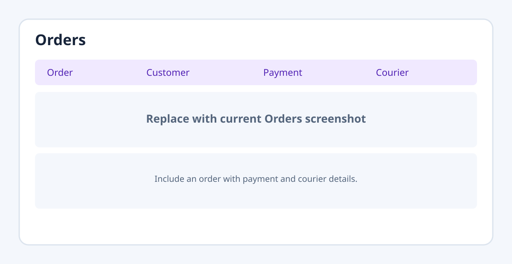

WooCommerce remains the source of products, stock, prices, orders, statuses, and gateways. Eilmo supplies checkout presentation and optional rules. Configure business rules once in plugin settings; use Elementor to place products and override the appearance of an individual checkout.
This guide describes the current plugin source (2.2.4.25). Some menus appear only after license activation or when their module is enabled. Existing saved pages can contain older compatibility settings; the workflow below is for new pages.
1. Start here
- Install and activate WooCommerce and this plugin; activate the Eilmo license.
- Go to Checkout Flow → Checkout Settings → General. Enable only the modules you use.
- Choose global Style, checkout layout and language, then set delivery, payment options, payment methods and customer fields.
- For an Elementor landing page, make marketing cards with Product Button, Variation Selector or Combo Button, and add one Checkout Flow widget for the form.
- Place a test order and verify the WooCommerce order total, fee/discount lines, payment state and email before publishing.
[eilmo_checkout product_id="123"] shortcode. Combo offers are placed with their own Elementor widget; special discounts are automatic rules.2. Install and activate
In WordPress, use Plugins → Add New → Upload Plugin, upload the plugin ZIP, activate it, then open Checkout Flow. WooCommerce is required. Elementor is optional unless you use the Elementor widgets. Activate the license before expecting the complete settings menu.
For updates, back up the site and database, replace the plugin through the normal WordPress update/install flow, clear page and asset caches, and revisit the checkout page. Deactivation does not delete plugin settings. The uninstall removal switch is described in §27.
3. Admin map
| Menu | Use |
|---|---|
| Dashboard | Order metrics, attention items, integration health and quick links; period filters cover Today, Last 7 Days, This Month and Last Month. |
| Checkout Settings | General, Style, Delivery, Payment Options, Payment Methods, Customer Information and Order Management. |
| Offers & Discounts | Combo Offers, Special Discounts and Coupons. |
| Default Checkout / Quick Checkout | Displayed when the corresponding optional module is enabled. |
| Integrations | Courier, Meta Tracking and WhatsApp tabs for enabled modules. |
| Abandoned Checkouts | Recorded incomplete checkout activity and follow-up tools, when enabled. |
| Security / Help Center | Checkout protection, license, documentation and tutorials. |

assets/images/admin-map.svg with a current admin navigation screenshot.4. General settings and optional modules
General is the starting point for the checkout layout/language, summary labels and order action, plus optional feature switches. The module switches include Abandoned Checkout, WhatsApp Ordering, Single Product Quick Checkout, WooCommerce Checkout Integration, Courier and Meta Tracking. Disabled modules may hide their dedicated menus.
Choose the global checkout language as English or বাংলা. The Elementor Checkout Flow widget can override it per instance. Merchant-authored text, such as delivery names, needs its own Bangla value; when absent, the English merchant text remains as fallback. Configure the order button templates here; {amount} inserts the live amount.
Keep settings for calculations, methods, credentials and rules in plugin admin. Elementor overrides are intended for content visibility, arrangement and appearance of an individual widget.
5. Theme and layout
Checkout Settings → Style supplies the global theme preset, colour tokens and preview. Global changes flow through checkout components that inherit those tokens. In Elementor, the Checkout Flow widget exposes Theme and Layout as its main style controls. Use them first for a consistent page; leave an override empty to inherit the global value.
The widget also groups a small set of common colour choices for Products & Packages, Customer Form, Delivery, Payment Options, Payment Methods, Coupon, Order Summary, Order Button and WhatsApp Button. Fine-grained controls remain available in Elementor’s Advanced tab. A previously saved detailed override can take precedence; reset it if a new theme colour appears not to work.
Quick Checkout and Default Checkout have their own appearance controls. Quick Checkout can use its Plugin Default Theme or a custom style source. Native Default Checkout uses its separate theme and can turn its plugin styling off while retaining the functional adapter.
6. Elementor: Checkout Flow widget
Add the Checkout Flow widget once on the page. Its Content tab contains:
- Checkout Content: inherited or local Full Inline / Right-side Sticky layout, English / বাংলা, Single or Multiple Products, primary product for Single Product, package section visibility, title/helper/description/quantity switches and the threshold for a Change modal.
- Delivery & Payment Layout: show/hide delivery, responsive card columns for delivery and payment options, and List/Grid plus responsive columns for payment methods. Hiding delivery still applies the configured default method and charge.
Its Style tab keeps the global Theme and Layout controls and concise colour overrides for the checkout sections. The checkout widget is for the form, summary and order action. Product marketing cards and combo selectors belong to their separate Elementor widgets.

assets/images/elementor-checkout.svg with the current widget panel.7. Elementor product widgets
Add or remove a simple product or an exact variation from the checkout.
Show visual variable-product choices as grid cards or compact buttons.
Add or remove a saved Combo Offer from the global Combo library.
Collect customer, delivery and payment information and place the order.
If a Product Button or Variation Selector targets the same product as the Checkout Flow widget’s primary product, it synchronizes with the package selector instead of creating an extra row. Multiple Products mode starts empty and receives selections from the product widgets.
8. Shortcode for non-Elementor pages
[eilmo_checkout product_id="123"]The shortcode renders the checkout form for a selected product. [eilmo_checkout] can use the saved defaults. Existing pages may still carry historical product, variation and presentation attributes; they remain accepted for compatibility. Do not use old combo, order-bump or special-offer assignment examples when creating new pages. Combo Offers use the Elementor Combo Button; Special Discounts run from enabled global rules and appear only when they produce a real benefit.
9. Delivery
In Checkout Settings → Delivery, create methods with labels, charges, optional descriptions, and a default. Add Bangla merchant text where needed. Choose the layout and responsive columns for method cards. The selected charge participates in the live summary and the final server-side order.
The Checkout Flow Elementor widget can hide the delivery chooser or override card columns on that page. Hidden delivery does not remove the fee: the configured default still applies. Automatic free-delivery promotions are configured under Offers & Discounts → Special Discounts. A zero delivery charge is displayed as Free Delivery where the UI supports that label.
10. Payment Options
Enable any supported combination of Cash on Delivery, Advance Payment and Full Payment. Select the default among enabled options, then configure layout/columns. Cash on Delivery has no pay-now method selector; the balance is collected on delivery. Advance Payment calculates Pay Now and Remaining Due from the saved rules. Full Payment collects the payable total and can apply a configured benefit.
Advance rules can use a configured calculation basis and amount ranges; text templates support {pay_now}, {remaining_due} and {grand_total}. A payment method is needed for Advance or Full Payment. The Elementor widget can override responsive payment-option columns, while the business logic stays in plugin settings.
11. Payment Methods
Checkout Settings → Payment Methods controls enabled methods and the default. Supported sources include the configured Eilmo bKash/Nagad manual methods, bank transfer, other configured manual methods and eligible WooCommerce gateways. A method may request a Transaction ID and/or a payment screenshot. Uploading proof is evidence to review, not automatic confirmation that funds arrived.
Method cards may be shown as a one-column List or a responsive Grid. In Elementor, Payment Methods has an Arrangement override; grid column selectors apply only to Grid. The widget’s Style → Payment Methods includes file-upload border/accent, surface, text and button-text colours, so the chooser can follow the plugin theme or a local widget override. Keep logos as accessible local assets in your own site configuration.
12. Customer Information
Use Checkout Settings → Customer Information to configure the checkout fields, labels, required states and related behaviour. Review name, phone, address, notes and verification settings against the data your store needs. Elementor can style the Customer Form without redefining its validation rules. Test with a non-admin customer account because some security bypasses may apply to administrators.
13. Combo Offers and Special Discounts
Offers & Discounts → Combo Offers stores reusable product combinations. Each offer can use a fixed combo price, percentage discount or fixed discount, with eligibility choices for other discounts and coupons. Place an enabled offer through Checkout Flow – Combo Button in Elementor. The checkout form does not contain a built-in combo card.
Special Discounts are automatic condition → reward rules. Configure eligible products, conditions, reward and schedule in the admin. The customer sees the resulting benefit in totals/summary only when the rule applies. This includes free-delivery promotions where configured. Avoid duplicating the offer with an extra manually styled price message that could disagree with the final order.
14. Coupons
Use Offers & Discounts → Coupons to enable the supported coupon system: WooCommerce coupons or Eilmo custom coupons. Configure the coupon fields and eligibility there. The Checkout Flow widget can style the coupon section. Verify stacking with combo pricing, Special Discounts and Full Payment benefits using a real test cart; the final order is validated server-side.
15. Order Summary and order action
The summary reflects selected products, quantity, delivery, coupons, applicable discounts, Pay Now and Remaining Due. Configure global summary labels and visibility under Checkout Settings → General → Order Summary. Configure button text, payment CTA templates, optional amount on the button and footer notice under Order Button. A template can contain {amount}; checkout language determines default wording.
The frontend summary is a preview. The submitted WooCommerce order recalculates and validates product prices, offers, delivery and payment amounts on the server.
16. Single Product Quick Checkout
Enable the Single Product Quick Checkout module in General, then use its dedicated menu to set button behaviour, content and appearance. It opens from supported WooCommerce single-product pages as a bottom sheet or centered modal and uses the shared checkout/order pipeline. Its visual theme is independently scoped: use the Plugin Default Theme or a custom source, then test the product page at desktop and mobile widths.
17. Native WooCommerce checkout integration
Enable WooCommerce Checkout Integration in General to expose the Default Checkout menu. From there, independently enable the native Payment Options, Live Fraud Check and Delivery System as needed. Existing advance rules, configured payment methods and relevant discount logic are reused. Supported surfaces include Classic Checkout and the Checkout Block frontend; when advanced fields require the classic processor, the plugin adapts the frontend while the page can remain a block in the editor.
Use Plugin Checkout Styling controls the isolated native checkout visual layer. When off, only the functional adapter remains and the theme/WooCommerce styling is the visual authority. This setting is separate from the campaign Checkout Flow widget style.
18. Cart Drawer and Cart Checkout
The Cart Drawer uses the WooCommerce cart; Cart Checkout shares the checkout rendering and order pipeline. Place the relevant widget only where that experience is needed, then test selection updates, fees, payment and the order-received page. WooCommerce still owns cart and order data.
19. WooCommerce Orders and manual orders
Orders are normal WooCommerce orders. The order editor shows line items, delivery/discount fee lines and Checkout Flow Payment Details such as payment type, method, Pay Now, Remaining Due, proof, transaction ID, payment status and source when available. Manual proof must be reviewed before marking a payment paid.
Checkout Settings → Order Management has two scopes. Default Order Table Customize chooses visible columns when the enhanced Order Table Management mode is off. The enhanced mode has inline status updates and per-detail switches for order, customer/address, products/variations, date, status, security, payment, proof/transaction, courier, Meta, customer note, total, origin and actions. The current order rows are responsive; column visibility settings apply across admins.
When creating an order from WooCommerce admin, the Eilmo manual-order composer accepts manually entered delivery charge and discount. Zero delivery can be labelled Free Delivery. For Advance Payment, its amount field appears with the saved rule value as a starting point and can be changed. Recalculate and verify totals before saving.

assets/images/order-management.svg with a current Orders screen.20. Courier and risk information
Enable the Courier module, then open Integrations → Courier to configure the available services and credentials. Courier Success/BD Courier supplies the All Couriers breakdown; Steadfast and Pathao also support their configured booking/history workflows. A manual Refresh Courier Data action checks and stores the latest available profile for the selected customer. Do not treat a failed/unavailable API response as a successful delivery history.
Steadfast’s current profile can provide a delivery ratio, cancellation ratio, customer-volume band, fraud reports and checked time. In the BD Courier All Couriers card, Steadfast’s rate-only data is displayed as its returned parcel range and volume band (for example, 6–20 (Medium)) alongside the success percentage; it is not converted into invented delivered/total counts. Badge colour follows the assessed risk. Local store order history appears separately and is never added to external courier totals.
The Orders and Abandoned Checkouts courier cards share the saved profile presentation, including the store-order history where available. Courier history helps staff review risk; it does not replace verification of a current order.
21. Abandoned Checkouts
Enable the module in General to record meaningful unfinished checkout activity. The Abandoned Checkouts screen supports review and follow-up status; completed checkouts are removed from the abandoned list and remain available in WooCommerce Orders. Courier performance can be reviewed there when the relevant module and data are available. Its All Couriers breakdown uses the same stored score and local store-history context as Orders.
22. Security and fraud controls
Checkout Flow → Security contains the checkout protection and activity tools: customer/IP blocks, duplicate-order and rate-limit controls, and related logs. Live Fraud Check settings can constrain permitted Cash/Advance/Full options using a signed decision and may require a billing phone on native checkout. Configure these policies for your store, then test with an ordinary customer account. A courier risk badge is advisory and should be read with the security signals, not used as a standalone payment decision.
23. Meta Tracking
Enable the module in General and configure Integrations → Meta Tracking for browser Pixel and, if used, Conversions API. Configure event credentials and purchase strategy there. For new configurations in 2.2.4.25, Advanced Purchase defaults to the Completed order status; previously saved strategy/status choices stay intact. The browser and server paths have deduplication safeguards. Test events with your consent setup and keep marketing tracking disabled until your site has the required consent process.
24. WhatsApp Ordering
Enable the module in General, then use Integrations → WhatsApp Ordering for the destination number and message template. The checkout button placement is controlled with the global layout/order-button settings; the widget has a matching style group. Verify the generated message with a sample order, including variable products and totals.
25. License and Help Center
The dashboard is available before license activation; the complete feature/settings surface requires a usable license. Help Center provides license controls, documentation and tutorials supplied by the configured license service. Help content is cached, with the latest successful copy retained during a temporary service outage. Plugin updates installed from WordPress.org follow WordPress’s normal update system.
26. Troubleshooting
| Symptom | Check |
|---|---|
| A menu or widget is missing | Check WooCommerce/Elementor activation, license status and the corresponding General module switch. |
| Checkout language changes but some text stays English | Confirm the widget’s language override, clear cache and add Bangla merchant-authored labels/descriptions where available. |
| Elementor colour does not update | Check global Theme, the widget’s local colour and any saved Advanced override; regenerate Elementor CSS and clear cache. |
| Delivery/payment card columns look wrong | Check widget overrides versus plugin defaults and test Desktop, Tablet and Mobile; List payment methods intentionally has no grid-column controls. |
| Payment logo or proof chooser looks wrong | Check the saved logo asset, browser network response, active theme CSS and the Payment Methods upload style controls. |
| Courier data says unavailable/no history | Check credentials, customer phone format, network/API response and last checked time; refresh intentionally does not fabricate missing history. |
| Totals differ from a preview | Review product/variation price, delivery default, coupon, special discount and payment-option rules in the final WooCommerce order. |
| Settings changes are not visible | Save settings, clear page/CDN/object cache and refresh the Elementor editor or frontend page. |
27. Data retention and privacy
Plugin settings and operational records are preserved on deactivation or deletion by default. To remove plugin-owned settings, caches, schedules and tables on uninstall, explicitly enable Checkout Settings → General → Data Retention → Remove Plugin Data on Uninstall before deletion. WooCommerce orders and their historical order metadata remain.
When configured, external integrations can send only the data required for license, courier, payment or tracking operations to their respective services. Document those services in the store privacy notice and connect Meta tracking to the site’s consent workflow. Payment screenshot uploads may contain sensitive information; restrict order access to trusted staff.